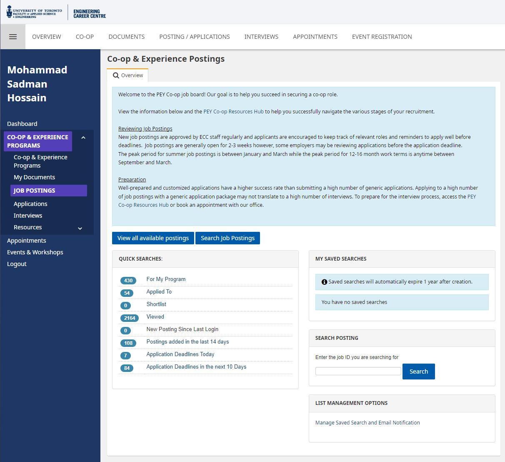
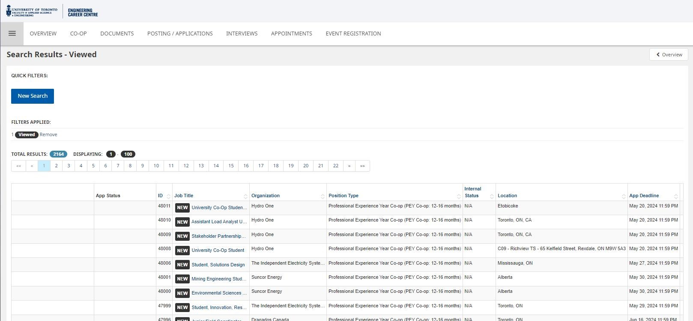
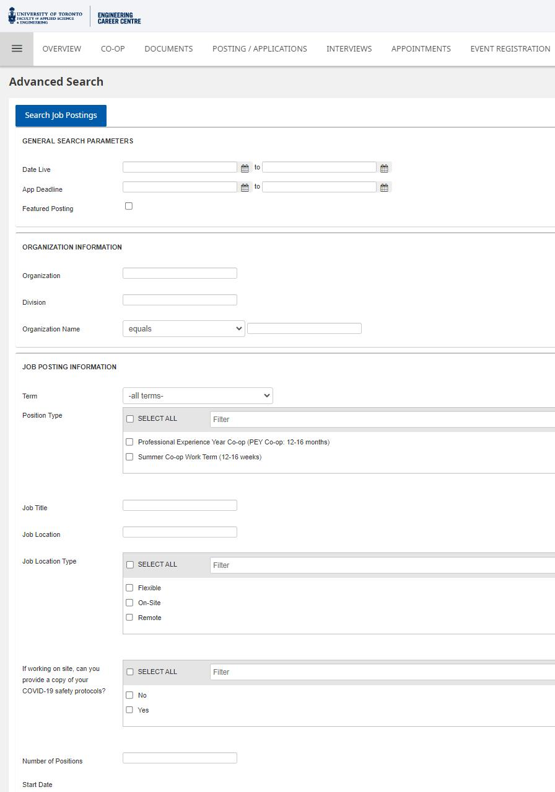
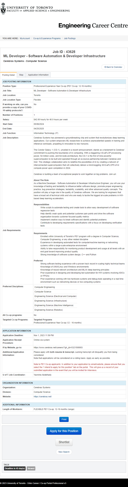
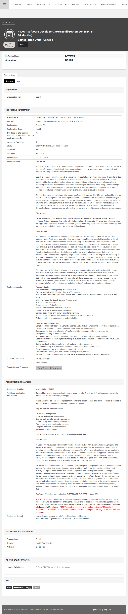

![]()
Whether you’re a new applicant to engineering/computer science at the University of Toronto (UofT) or someone who’s going through their first, second, or even third or fourth years, you’ve probably been curious at one point or another about what jobs are actually posted on the much acclaimed1 PEY Co-op job board2 for 12-16 month positions .
1 well, to some, at least
2 Especially if you’re not in the software industry, which for better or worse make up >70% of the jobs on the portal.
3 There’s also a couple of quirks that you might not know about if you don’t already have access to the portal.
4 In a nutshell: better than you’d think, although it depends on who you exactly are. In some cases, it can be a lot worse.
Well, as a computer engineering student at UofT who’s just finished their third year (and who’s consequently been able to access the portal for the past two semesters), I thought it would be interesting to my own little data collection on the topic, along with some analysis on recurring patterns3 (e.g. locations, international opportunities, etc.), and share both my findings and the raw data (thousands of jobs posted across several months) so that future PEY Co-op students can get a better idea of what they can expect from the portal4.
For a sneak peek at the data, try running the SQL query below.
SELECT * FROM JobPostings LIMIT 5;Scraping job posting data
The UofT PEY Co-op job board itself is located behind a login portal at uoftengcareerportal.ca/myAccount/internship/postings.htm. To get in, you need to a) be a student at UofT (to have valid login credentials); b) be enrolled in the PEY Co-op program; and c) be registered to start your 12-16 month internship sometime between May and September following your current year (which means that unless you’re a keen student in your second year who’s opted in to get access and do your PEY early, you’re either in your third year or you don’t have access to the job portal). As an engineering student who’s just finished their third year5, I’ve had privileged access for 8 months and counting, and I’ve been able to save data on quite the number6 of job postings posted on the portal (but more on that later).
5 Well, by the time you’re reading this, it’ll have been a while since I finished my third year.
6 And by “quite the number”, I mean every single job posted since I’ve had access.
What you can expect from the job board
The landing page7 for the PEY Co-op job board hosts the same look as the one for all the cross-institutional job boards at UofT’s CLNx and uses the same organization of elements and processes for browsing, searching for, and applying to job postings, so if you’re a UofT student who’s used CLNx in the past8 you already know what it’s like to experience using the PEY job board.
7 Note: you need to sign in using your UofT credentials before you can access this.
8 e.g. for applying to work study positions.

Job Postings).
Viewed). Note: the page shows that I’ve viewed 2164 jobs on the portal, even though there were only ~1.8k PEY Co-op positions ever posted (as you’ll learn later on). Why’s that? Well, the remaining ~300 jobs are actually from when the portal opened up for my cohort’s PEY Co-op summer work-term (12-16 weeks). I’ll leave a post diving into summer job postings for sometime in the future.
Search Job Postings).Sample job postings
Your average PEY job postings look like the below. Note: The design on the left was used for a couple years, until the most recent redesign in late 2023 (which took place halfway through my fall semester of third year). If you’re an upcoming PEY Co-op student, job postings should look like the right for you.

ML Developer - Software Automation & Developer Infrastructure @ Cerebras
Software Developer Intern @ GeotabNothing much to look at, just some basic tables with information about the job and the company, which thankfully are simple to parse.
Getting the posting date for jobs
One thing that’s been important to me since the very start of this project is making sure that the timestamps of job postings are available to view. As someone who took a few months before I landed a position that I was really satisified with, there were times where I felt a bit apprehensive at turning down offers for roles that I thought were fine but didn’t feel excited about. I had no data beyond anecdotes from upper years about what’s posted over the course of the fall and winter semesters, and so I couldn’t really predict whether that dream role I had in mind was just a couple days from being posted (or whether jobs would start drying up so I should stick with whatever I had at that point in time), which is why I hope that at least one of the things this project of mine can provide is some reassurance to future PEY students about what jobs are posted and when9.
9 One thing to keep in mind: every year is different, and just because some company posted some number of jobs at some point in time doesn’t mean that they’ll do it again next year. Of course, it also doesn’t mean that they won’t do it again, so make sure your takeaways from the data are taken with a grain of salt.
There’s just one problem: there’s absolutely no data indicating when a job was posted.
Well, except for one thing: the New Posting Since Last Login button on the landing page.
Whenever you login to the portal, that New Posting Since Last Login button gets updated with links to all of the jobs posted since your last login, so if you were to check the job board every single day and save the data for all of the job postings shown there each time you login, well, then you’ve successfully attributed a posting data for every single job.
Which is why that’s exactly what I’ve done for the past 243 days (and counting).
How I’ve been saving posting dates for jobs
And it’s all thanks to Gildas Lormeau’s10 SingleFile web extension11, which allows for saving a complete web page into a single HTML file (unlike Chrome12). In addition (and rather importantly), the SingleFile extension allows for saving pages for all tabs in the current window (this is important for making the whole archival process a not-headache).
11 While there’s also a CLI tool available, the tricky navigation for the PEY job board website means that manually navigating to pages & then saving them using the extension is a lot easier.
12 Chrome and virtually all other browsers have a slightly more complicated setup for saving pages which makes organizing files for saved pages slightly less elegant compared to dealing with just a single file via SingleFile: when you press Ctrl+S on a page, it doesn’t just save that page’s HTML file but also a folder containing all of the media from the page (which, given that none of the job postings contain images, is just one more thing to have to delete).
13 Using the Save all tabs option under the SingleFile extension.
By CTRL-clicking on every single job posting shown behind New Posting Since Last Login (so that every new posting opens on a new tab) and then using the SingleFile extension to save the page each tab in one go13, I’m able to condense the whole process of saving new postings for the day to just 1-2 minutes. Put each day’s postings into a timestamped folder (made faster thanks to a handy AutoHotKey script that’s always a keyboard shortcut away), which itself goes into a big folder on my local computer of all PEY job postings collected thus far, and I’ve got myself data on almost 2k job postings just waiting to be analyzed for some insights.
📁PEY POSTINGS ARCHIVE/
├── 📁2023-09-17_20-14-10/
│ ├── UofT Engineering Career Centre - MyAccount - Co-op & Experience Programs - Job Postings (9_17_2023 8_13_11 PM).html
│ ├── UofT Engineering Career Centre - MyAccount - Co-op & Experience Programs - Job Postings (9_17_2023 8_13_12 PM).html
│ └── ...
├── 📁2023-09-18_00-51-40/
│ ├── Job ID_ _ 43541 UofT Engineering Career Centre - MyAccount - Co-op & Experience Programs - Job Postings (9_18_2023 12_51_48 AM).html
│ ├── Job ID_ _ 43554 UofT Engineering Career Centre - MyAccount - Co-op & Experience Programs - Job Postings (9_18_2023 12_52_08 AM).html
│ └── ...
├── 📁2023-09-18_16-08-36/
├── 📁2023-09-18_16-08-36/
├── 📁2023-09-22_20-29-46/
├── 📁2023-09-25_20-16-32/
├── ...
├── ...
├── ...
├── 📁2024-05-16_11-24-45/
├── 📁2024-05-16_23-55-40/
├── 📁2024-05-17_11-58-36/
│ ├── 48007 -_ _ _ _ _ Software Developer Intern (Fall_September 2024, 8-16 Months) - UofT Engineering Career Centre - MyAccount - Co-op & Experience Programs - Job Postings (2024-05-17 11_57_42 AM).html
│ ├── 48013 -_ _ _ _ _ Solutions Engineering Intern (Fall_September 2024, 8-12 Months) - UofT Engineering Career Centre - MyAccount - Co-op & Experience Programs - Job Postings (2024-05-17 11_57_42 AM).html
│ └── 48017 -_ _ _ _ _ Research & Technology - Engineering Program Management Intern - UofT Engineering Career Centre - MyAccount - Co-op & Experience Programs - Job Postings (2024-05-17 11_57_42 AM).html
├── 📁2024-05-17_14-12-49/
└── 📁2024-05-17_16-25-26/Why not write a script to automate saving postings?
Is it possible to automate the whole process of saving data for job postings? Technically, yes, it’s absolutely feasible, but given how easy it is manually save data for job postings in a minute or two for every couple hundred of jobs (with the assistance of a few scripts to make the CTRL-clicking a lot faster), it’s just not worth the time to make the routine task more efficient14 (I’d be spending more time than I’d save, as any XKCD enjoyer can relate to15).


Storing job postings in a database
HTML is fine for temporary storage purposes16, but I need something that will allow me to view and analyze the data in a fast, efficient, and easy-to-use manner. Enter the underrated gem of database technologies: SQLite.
16 Despite a large portion of the saved HTML files consisting of useless space in lines of JavaScript, CSS, and HTML that have nothing to do with the data that counts, it’s just not worth the time investment for me to parse through every file and remove the clutter since all the saved job postings for a year only take up a couple hundred MB.
17 Just PostgreSQL, with a bit of Python on the side via psycopg2.
18 And of course Python is ideal for the scale of data I’m working with here, just a couple thousand HTML files.
Now, I’ve never used SQLite before17, but thanks to the sqlite3 documentation for Python it looks like I’ll be right-at-home as someone who’s used psycopg2 in the past18.
But before I can start inputting all the data into a SQLite database, I need to figure out how to extract the key information (e.g. job title, location, description, company etc.) first.
Extracting data from HTML
If it were just a single page, I could use something like Microsoft Edge’s Smart Copy or the Table Capture extension and call it a day, but extracting data from >20k pages is a whole different ballgame.
The HTML code for each job posting page doesn’t have the best formatting19, but thanks to everything being stored in tables I can just use Python’s trusty BeautifulSoup4 library on my locally saved HTML pages and get the text in every table data cell in less than 50 lines of code:
19 The page for the Cerebras position above has 3506 empty lines with only 809 lines dedicated to actual code, and the HTML code on non-empty lines isn’t exactly the most pleasing to read:
sample_job.html
<!-- Job ID_ _ 43628 UofT Engineering Career Centre - MyAccount - Co-op & Experience Programs - Job Postings (9_18_2023 12_52_04 AM).html -->
<div class=orbisModuleHeader>
<div class=row-fluid>
<div class=span2>
<div style=text-align:center>
<h1>
Job ID
: 43628
</h1>
</div>
</div>
<div class=span7>
<h1>
ML Developer - Software Automation & Developer Infrastructure
</h1>
<h5>
Cerebras Systems - Computer Science
</h5>
</div>
<div class=span3>
<ul class=pager>
<li>
<a href=javascript:void(0)><i class=icon-chevron-left></i>Back to Overview</a>
</li>
<!-- ... -->parse.py
import argparse
from bs4 import BeautifulSoup
def parse_html_file(filepath, verbose=False):
with open(filepath, 'r', encoding='utf-8') as file:
html_content = file.read()
soup = BeautifulSoup(html_content, 'lxml')
data = {}
rows = soup.find_all('tr') # find all table rows
for row in rows:
tds = row.find_all('td') # find all table data cells
if len(tds) >= 2:
label_td = tds[0]
label_text = '\n'.join(label_td.stripped_strings)
value_td = tds[1]
value_text = '\n'.join(value_td.stripped_strings)
data[label_text] = value_text
if verbose:
for key, value in data.items():
print(f"{key}: {value}")
else:
print("Parsing completed.")
if __name__ == "__main__":
parser = argparse.ArgumentParser(description="Parse HTML for 2 column table data.")
parser.add_argument("-f", "--filepath", required=True, help="Path to the HTML file to be parsed.")
parser.add_argument("-v", "--verbose", action="store_true", help="Print parsed data.")
args = parser.parse_args()
parse_html_file(args.filepath, args.verbose)Trying out the quickly-written parse.py script on one of the saved HTML pages, and it’s able to get all of the values for all of the table fields with no issues:
$ python parse.py --verbose --filepath "Job ID_ _ 43628 UofT Engineering Career Centre - MyAccount - Co-op & Experience Programs - Job Postings (9_18_2023 12_52_04 AM).html"Position Type:: Professional Experience Year Co-op (PEY Co-op: 12-16 months)
Job Title:: ML Developer - Software Automation & Developer Infrastructure
Job Location:: Toronto
Job Location Type:: Flexible
If working on site, can you provide a copy of your COVID-19 safety protocols?:: No
Number of Positions:: 1
Salary:: $42.00 hourly for 40.0 hours per week
Start Date:: 05/06/2024
End Date:: 04/25/2025
Job Function:: Information Technology (IT)
Job Description:: Cerebras Systems has pioneered a groundbreaking chip and system that revolutionizes deep learning applications. Our system empowers ML researchers to achieve unprecedented speeds in training and inference workloads, propelling AI innovation to new horizons.
The Condor Galaxy 1 (CG-1), unveiled in a recent announcement, stands as a testament to Cerebras' commitment to pushing the boundaries of AI computing. With a staggering 4 ExaFLOP processing power, 54 million cores, and 64-node architecture, the CG-1 is the first of nine powerful supercomputers to be built and operated through an exclusive partnership between Cerebras and G42. This strategic collaboration aims to redefine the possibilities of AI by creating a network of interconnected supercomputers that will collectively deliver a mind-boggling 36 ExaFLOPS of AI compute power upon completion in 2024.
Cerebras is building a team of exceptional people to work together on big problems. Join us!.
About The Role
As a Machine Developer - Software Automation & Developer Infrastructure Engineer, you will use your knowledge of testing and testability to influence better software design, promote proper engineering practice, bug prevention strategies, testability, scalability, and other advanced quality concepts. The position will play a huge role in the quality of Cerebras software. We are looking for engineers that have a broad set of technical skills and who are ready to tackle the biggest at-scale problems in HW-based deep learning accelerators.
Responsibilities
Write scripts to automate testing and create tools to allow easy development of software regression tests
Help identify weak spots and potential customer pain points and drive the software organization towards customer focused quality metrics
Implement creative ways to break software and identify potential problems
Contribute to developing requirements specifications with a focus on developing verification tests
Job Requirements:: Requirements
Enrolled within University of Toronto's PEY program with a degree in Computer Science, Computer Engineering, or any other related discipline
Experience in developing automated tests for compute/machine learning or networking systems within a large-scale enterprise environment
Ability to take responsibility for monitoring product development and usage at all levels with an end goal toward improving product quality
Strong knowledge of software system design, C++ and Python
Preferred
Strong software testing experience with a proven track record in scaling highly technical teams
Knowledge of UNIX/Linux and Windows environments
Knowledge of neural network architecture and ML/AI deep learning principles
Prior experience in designing and developing test automation for HW systems involving ASICs or FPGAs
Prior experience working with live hardware systems and debug tools operating in a real time environment such as networking devices or live computing systems
Preferred Disciplines:: Computer Engineering
Computer Science
Engineering Science (Electrical and Computer)
Engineering Science (Infrastructure)
Engineering Science (Machine Intelligence)
Engineering Science (Robotics)
All Co-op programs:: No
Targeted Co-op Programs:: Targeted Programs
Professional Experience Year Co-op (12 - 16 months)
Application Deadline:: Nov 1, 2023 11:59 PM
Application Receipt Procedure:: Online via system
If by Website, go to:: https://www.cerebras.net/careers/?gh_jid=5321500003
Additional Application Information:: Please apply with
both resume & transcript.
Lacking transcript will disqualify you from being considered.
Note that applications will be considered on a rolling basis. Apply as early as possible.
Note to PEY Co-op applicants: In addition to your application by email/website, please ensure that you select the “I intend to apply for this position” tab on the portal. This will give us a record of your submitted application in the event that you will be invited for interviews.
U of T Job Coordinator:: Yasmine Abdelhady
Organization:: Cerebras Systems
Division:: Computer Science
Website:: https://cerebras.net/
Length of Workterm:: FLEXIBLE PEY Co-op: 12-16 months (range)Finetuning data extraction
There’s a few nuances to the data extraction that mean this simple script needs just a bit more extending so it can properly parse the entire local dataset. I’m getting the text corresponding to any inline links, but the links themselves aren’t included since they’re within the html <a> tags, so I need to add handling for those as well. Another nuance is the fact that the formatting for HTML pages has changed20 (several times actually) over the course of the last two semesters. Since the location of the data has always remained in tables, that’s largely a non-issue. While the job title and company name included in the header above any table on job posting pages are currently missed by the script, that data is also present in the tables below (and extracted by the script properly), so that, too, is a non-issue. With one exception: job IDs aren’t extracted. Luckily, I had the foresight to configure SingleFile to include the job ID automatically as part of the filename for each HTML page back when I started the archival process, so I can add some logic to parse that as well. Unluckily, however, there were a few periods of time where that configuration was lost21, so I’m going to have to do some file contents parsing regardless.
20 At times purposefully by myself (e.g. adding Job ID and later Job Title to filenames for saved HTML files for easier file browsing and duplication checking), and at times by the university (i.e. there was a big redesign of the job board that took place in the latter half of the fall semester, which made it so the PEY job board uses the same frontend design as job boards on CLNx, whereas prior to that it looked a bit different despite functionally working the same).
21 At one point, all of my extensions were uninstalled somehow (probably due to a Chrome update gone wrong), and so I had forgotten to reconfigure SingleFile to include job IDs in the saved filenames for many ways until I got some free time and was able to pore over my notes (and reconfigure everything back to the way it was).
22 One for the old design, and the other for the new design.
A quick manual parsing of the different HTML files shows that there’s only two different locations22 that job IDs can be located, so I can just add another function to try and find the job ID located at either location in all files and I’m now able to extract all the job IDs as well:
parse.py
import argparse
from bs4 import BeautifulSoup
import re
def extract_job_id_from_html(soup):
# try to find job ID in a <h1> tag with the specific class
header_tag = soup.find('h1', class_='h3 dashboard-header__profile-information-name mobile--small-font color--font--white margin--b--s')
if header_tag:
header_text = header_tag.get_text(strip=True)
match = re.match(r'^(\d+)', header_text)
if match:
return match.group(1)
# if not found, try to find an <h1> tag containing the words "Job ID"
job_id_tag = soup.find('h1', string=re.compile(r'Job ID', re.IGNORECASE))
if job_id_tag:
job_id_text = job_id_tag.get_text(strip=True)
match = re.search(r'Job ID\s*:\s*(\d+)', job_id_text, re.IGNORECASE)
if match:
return match.group(1)
return None
def parse_html_file(filepath, verbose=False):
with open(filepath, 'r', encoding='utf-8') as file:
html_content = file.read()
soup = BeautifulSoup(html_content, 'lxml')
data = {}
job_id = extract_job_id_from_html(soup)
if job_id:
data['Job ID'] = job_id
rows = soup.find_all('tr') # find all table rows
for row in rows:
tds = row.find_all('td') # find all table data cells
if len(tds) >= 2:
label_td = tds[0]
label_text = '\n'.join(label_td.stripped_strings)
value_td = tds[1]
value_text = '\n'.join(value_td.stripped_strings)
data[label_text] = value_text
return data
if __name__ == "__main__":
parser = argparse.ArgumentParser(description="Parse HTML for 2 column table data.")
parser.add_argument("-f", "--filepath", required=True, help="Path to the HTML file to be parsed.")
parser.add_argument("-v", "--verbose", action="store_true", help="Print parsed data.")
args = parser.parse_args()
data = parse_html_file(args.filepath, args.verbose)
if args.verbose:
for key, value in data.items():
print(f"{key}: {value}")
else:
print("Parsing completed.")Now with a method of easily extracting all the relevant data from each HTML page, all that’s left is to automate running the parser across all files saved within timestamped subdirectories on my local computer and pipe the data into a SQLite DB.
Storing data in SQLite
Why SQLite?
SQLite sits right there in the sweet middle spot between raw data formats (like CSV, JSON) that are good fits for simple data (e.g. temperature, word lists) but aren’t as great for larger datasets with more complexity (especially when it comes to data analysis) and other larger RDBMS23 libraries that might be better designed for scaleability but are really just overkill for the little pet project that I have here at hand.
23 relational database management system
And the fact that SQLite is a single file on disk means that sharing the finely extracted and processed data is a lot easier too, which is important for me because I want future PEY co-op students to learn what they can from the dataset and better set their expectations for what to expect from program (and I hope the data helps prospective UofT students better make their admission decisions as well).
Most importantly, SQLite is serverless (unlike PostgreSQL or MySQL), which saves me a lot of headache and setup24 for this relatively small-scale project.
24 Especially since sqlite3 is built into Python’s standard library!
Pipelining data from ~2k HTML files to a single SQLite DB
Using SQLite with Python via sqlite3 is simple enough25. All I need to do is add some additional code for extracting the job posting date from the parent folder for each job posting’s HTML page and for iterating across every subfolder for PEY job postings on my local computer, as well as draft up a schema for the SQLite DB and write some code for piping data from Python dictionaries to the DB file.
Database Schema
Thankfully, all job postings share largely26 the same fields, so (for the time being27) the schema just ends up being an amalgamation of all the relevant table fields:
26 One small slight is that Application Receipt Procedure and Application Method are often used interchangeably (Application Receipt Procedure largely before the redesign, and Application Method after), and when one field is used the other is usually left blank (except for some positions which use both, meaning that I can’t exactly combine them into a single field without losing data; e.g. sometimes Application Method for a posting states to use the built-in applicant tracking system while Application Receipt Procedure states to use some company link, which is likely just attributable to job posters sticking with the default options when creating a new post). It’s largely a non-issue, and after some further exploration into the specific overlapping data I should be able to easily combine both into a single field.
27 I could potentially extend the schema with functional dependencies for repetitive data like company names, although it’s really only company and maybe a few other fields where values are guaranteed to repeat (Job Location Type, Salary, etc. can vary wildly and use combinations of text or integers, so there’s not much we can do to unify them) so it’s not the best representation for a general-purpose database (lossy conversions can always be made for analysis).
parse_to_db.py
# ...
def store_data_in_db(data, db_cursor):
columns = ', '.join([f'"{key}"' for key in data.keys()])
placeholders = ', '.join(['?' for _ in data.values()])
sql = f'INSERT INTO "JobPosting" ({columns}) VALUES ({placeholders})'
try:
db_cursor.execute(sql, tuple(data.values()))
except sqlite3.IntegrityError:
logging.info("Integrity Error: Skipping row")
pass
def create_db_schema(db_cursor):
db_cursor.execute('''
CREATE TABLE IF NOT EXISTS JobPosting (
id INTEGER,
postingDate DATE,
title TEXT,
company TEXT,
companyDivision TEXT,
companyWebsite TEXT,
location TEXT,
locationType TEXT,
numPositions INTEGER,
salary TEXT,
startDate TEXT,
endDate TEXT,
function TEXT,
description TEXT,
requirements TEXT,
preferredDisciplines TEXT,
applicationDeadline TEXT,
applicationMethod TEXT,
applicationReceiptProcedure TEXT,
applicationDetails TEXT,
PRIMARY KEY(id, postingDate)
)
''')
if __name__ == "__main__":
# ...Parsing to .db
Finally, with some additional code for properly parsing through all subfolders in my local directory and setting the postingDate value based on the folder name28 for each file, I can transform the entire dataset of >1.8k job postings into a single .db file under 10MB in size in ~3 min29.
28 e.g. 📁2023-09-17_20-14-10; easily achievable thanks to github.com/sadmanca/ahk-scripts/blob/master/keys.ahk
29 Which’d probably take even less time if it weren’t running on an old spinning hard drive.
parse_to_db.py
import argparse
from bs4 import BeautifulSoup
import re
import os
import sqlite3
from tqdm import tqdm
import logging
def extract_job_id_from_html(soup):
# Try to find job ID in a <h1> tag with the specific class
header_tag = soup.find('h1', class_='h3 dashboard-header__profile-information-name mobile--small-font color--font--white margin--b--s')
if header_tag:
header_text = header_tag.get_text(strip=True)
match = re.match(r'^(\d+)', header_text)
if match:
return match.group(1)
# If not found, try to find an <h1> tag containing the words "Job ID"
job_id_tag = soup.find('h1', string=re.compile(r'Job ID', re.IGNORECASE))
if job_id_tag:
job_id_text = job_id_tag.get_text(strip=True)
match = re.search(r'Job ID\s*:\s*(\d+)', job_id_text, re.IGNORECASE)
if match:
return match.group(1)
return None
def parse_html_file(filepath, job_posting_date, verbose=False):
with open(filepath, 'r', encoding='utf-8') as file:
html_content = file.read()
soup = BeautifulSoup(html_content, 'lxml')
# Extract the year, month, and day from the job_posting_date string
posting_date = job_posting_date.split('_')[0]
data = {'postingDate': posting_date}
job_id = extract_job_id_from_html(soup)
if job_id:
data['id'] = job_id
rows = soup.find_all('tr') # find all table rows
for row in rows:
tds = row.find_all('td') # find all table data cells
if len(tds) >= 2:
label_td = tds[0]
label_text = '\n'.join(label_td.stripped_strings).replace(':', '')
value_td = tds[1]
value_text = '\n'.join(value_td.stripped_strings)
links = value_td.find_all('a')
for link in links:
url = link.get('href')
link_text = link.get_text()
value_text = value_text.replace(link_text, f'{link_text} ({url})')
# Map label_text to corresponding database column
column_mapping = {
# 'Job ID': 'id',
# 'Job Posting Date': 'postingDate',
'Job Title': 'title',
'Organization': 'company',
'Division': 'companyDivision',
'Website': 'companyWebsite',
'Job Location': 'location',
'Job Location Type': 'locationType',
'Number of Positions': 'numPositions',
'Salary': 'salary',
'Start Date': 'startDate',
'End Date': 'endDate',
'Job Function': 'function',
'Job Description': 'description',
'Job Requirements': 'requirements',
'Preferred Disciplines': 'preferredDisciplines',
'Application Deadline': 'applicationDeadline',
'Application Method': 'applicationMethod',
'Application Receipt Procedure': 'applicationReceiptProcedure',
'If by Website, go to': 'applicationReceiptProcedure',
'Additional Application Information': 'applicationDetails',
}
# Check if label_text matches any of the predefined columns
if label_text in column_mapping:
db_column = column_mapping[label_text]
# If key already exists, append the value to it
if db_column in data:
data[db_column] += f'\n{value_text}'
else:
data[db_column] = value_text
return data
def store_data_in_db(data, db_cursor):
columns = ', '.join([f'"{key}"' for key in data.keys()])
placeholders = ', '.join(['?' for _ in data.values()])
sql = f'INSERT INTO "JobPosting" ({columns}) VALUES ({placeholders})'
try:
db_cursor.execute(sql, tuple(data.values()))
except sqlite3.IntegrityError:
logging.info("Integrity Error: Skipping row")
pass
def create_db_schema(db_cursor):
db_cursor.execute('''
CREATE TABLE IF NOT EXISTS JobPosting (
id INTEGER,
postingDate DATE,
title TEXT,
company TEXT,
companyDivision TEXT,
companyWebsite TEXT,
location TEXT,
locationType TEXT,
numPositions INTEGER,
salary TEXT,
startDate TEXT,
endDate TEXT,
function TEXT,
description TEXT,
requirements TEXT,
preferredDisciplines TEXT,
applicationDeadline TEXT,
applicationMethod TEXT,
applicationReceiptProcedure TEXT,
applicationDetails TEXT,
PRIMARY KEY(id, postingDate)
)
''')
if __name__ == "__main__":
logging.basicConfig(filename='run.log', level=logging.INFO, format='%(asctime)s %(message)s')
parser = argparse.ArgumentParser(description="Parse HTML files in a folder and store data in SQLite DB.")
parser.add_argument("-d", "--directory", default=os.getcwd(), help="Path to the directory containing HTML #<<files. Default is the current directory.")
parser.add_argument("--db", default=os.path.join(os.getcwd(), "job_postings.db"), help="SQLite database #<<file to store the parsed data. Default is 'job_postings.db' in the directory specified by -d.")
parser.add_argument("-v", "--verbose", action="store_true", help="logging.info parsed data.")
args = parser.parse_args()
conn = sqlite3.connect(args.db)
cursor = conn.cursor()
create_db_schema(cursor)
# Get the list of files
files = [os.path.join(dirpath, file) for dirpath, _, files in os.walk(args.directory) for file in files if file.endswith('.html') or file.endswith('.htm')]
# Create a progress bar
with tqdm(total=len(files)) as pbar:
for subdir, _, files in os.walk(args.directory):
job_posting_date = os.path.basename(subdir)
for file in files:
if file.endswith('.html') or file.endswith('.htm'):
filepath = os.path.join(subdir, file)
logging.info(filepath)
data = parse_html_file(filepath, job_posting_date, args.verbose)
store_data_in_db(data, cursor)
# Update the progress bar
pbar.update(1)
conn.commit()
conn.close()
logging.info("Parsing and storing completed.") Viewing the data
And so we have it: a single database file storing every single job posted on the UofT PEY Co-op job board for 2T5s30 (from 2023 to 2024). You can play around with querying the data below31, or download the SQLite .db file from the latest release at github.com/sadmanca/uoft-pey-coop-job-postings.
30 UofT Engineering students and alumni often include their graduation year after their name to denote their class. If you start first year in 2021, you will be part of the class of 2025, denoted as “2T5” (pronounced “two-tee-five”).
31 I’ve built-in a SQL view called JobPostings (the table with the actual data is called JobPosting, without the “s”) that excludes some of the columns with very long values (e.g. description, requirements, preferredDisciplines, applicationDetails) to make table formatting look a bit better if you’re running SELECT * queries. To run queries with the excluded columns, use the JobPosting table instead.
SELECT * FROM JobPostings LIMIT 5;Sample Queries
Which companies posted the most number of jobs?
SELECT company, COUNT(*) as num_postings
FROM JobPosting
GROUP BY company
ORDER BY num_postings DESC;Where are most jobs located?
SELECT location, COUNT(*) as num_postings
FROM JobPosting
GROUP BY location
ORDER BY num_postings DESC;How many job postings are there for mechatronics-adjacent positions?
SELECT COUNT(*) AS num_mech_postings
FROM JobPosting
WHERE title LIKE '%mechatronic%'
OR company LIKE '%mechatronic%'
OR companyDivision LIKE '%mechatronic%'
OR function LIKE '%mechatronic%'
OR description LIKE '%mechatronic%'
OR requirements LIKE '%mechatronic%'
OR preferredDisciplines LIKE '%mechatronic%';What does a job for a mechatronics-adjacent position look like?
SELECT *
FROM JobPosting
WHERE title LIKE '%mechatronic%'
OR company LIKE '%mechatronic%'
OR companyDivision LIKE '%mechatronic%'
OR function LIKE '%mechatronic%'
OR description LIKE '%mechatronic%'
OR requirements LIKE '%mechatronic%'
OR preferredDisciplines LIKE '%mechatronic%'
LIMIT 1;More to come in part 2!
Next Steps
You’ll notice that the data still needs some cleaning32, which is fine, should be fairly simple to do by manually parsing through the dataset and aggregating similar values.
32 e.g. Toronto and Toronto, ON are present as two distinct locations, when really they should just be one.
33 in part 2 of this series!
But after some basic data cleaning33 is the fun part: analyzing the data to generate some insights on posted jobs, including…
- How many jobs are posted for chemical/mechanical/mineral/… engineers?
- During what periods are the bulk of jobs posted?
- When do specific companies post most/all their jobs?
- How many jobs are reposted34, and which ones?
- …and more! Feel free to suggest exploration ideas in the comments below.
34 Something the Engineering Career Centre (ECC) people who run the PEY Co-op job board don’t inform you about ahead of time, employers can “repost” a job with the same job id (usually several weeks) after the original which makes it’ll show up under New Posting Since Last Login even if you’ve already viewed (and even though it’s technically still the same single job posting). It’s not commonplace but it did occur for a few dozen jobs (I imagine for those where the position was left unfilled after some initial batch of students applied and it was reposted to reinvigorate interest).
Reuse
Citation
@online{hossain2024,
author = {Hossain, Sadman},
title = {Analyzing {UofT} {PEY} {Co-op} {Job} {Postings} (2023-2024) -
{Part} 1: {Scraping} {Job} {Board} {Data}},
date = {2024-05-22},
url = {https://sadman.ca/posts/2024-05-22-analyzing-pey-postings-part-1},
langid = {en}
}